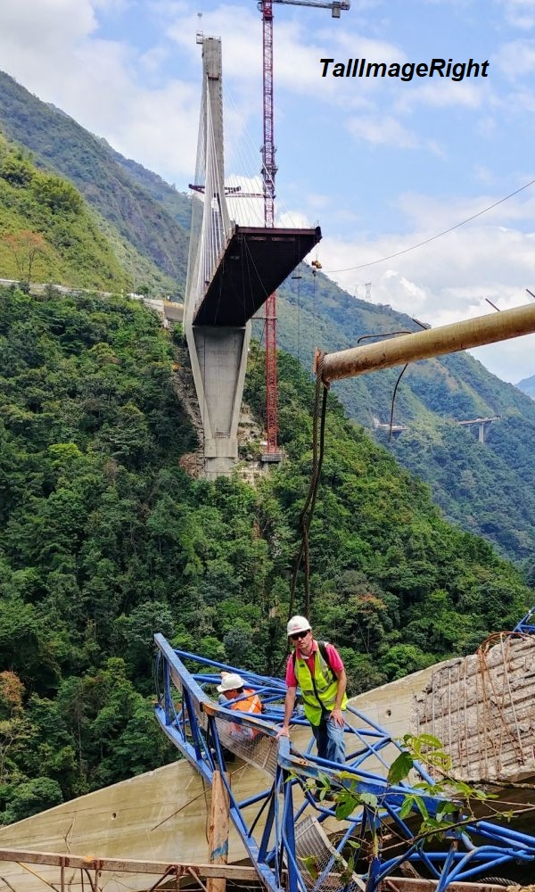

BOWSTRING GIRDER
Although suspension bridges began promisingly at the start of the nineteenth century, their development stalled for nearly a hundred years with the arrival of the railways.
Of the roughly 25,000 major bridges built in England during the Victorian period, most were railway bridges. Suspension bridges are extremely flexible and can deform dangerously when subjected to large, concentrated loads.
While this flexibility causes little concern for road bridges, it is far more problematic for trains.

Development
Trains can be a hundred times heavier than carts or lorries, so the deflections they cause can also be a hundred times greater.
This created a need for bridges that were not only light and inexpensive but also rigid and capable of spanning large distances. This led to the development of the tied arch or bowstring girder.
Thrust
An arch is naturally very rigid, but it pushes outward on its abutments with significant horizontal force known as THRUST.
While this is manageable if the abutments are cut into strong, solid rock, it can become awkward in many real-world situations, particularly in railway construction.
It is especially troublesome when a series of arches must be supported on tall, slender piers that cannot reliably resist large lateral thrusts.

Challenges
Victorian engineers often needed to carry railways boldly across deep valleys, sometimes more than 100 feet above the ground.
This created a challenge: traditional arches exert strong outward thrusts on their supports, which is problematic when those supports are narrow piers or when the foundations cannot resist large lateral forces.
One effective solution was to tie the two ends of the arch together with a tension member. In this arrangement the lower tie takes the tension, preventing the arch from pushing outward on the abutments.
The resulting bowstring girder resembles an ordinary arch with a suspended roadway, but it behaves quite differently.

“The lower tie takes the tension, preventing the arch from pushing outward on the abutments.”
Foundations
Instead of side thrust, the foundations only need to resist the vertical loads from the weight of the girder and the traffic on it. The entire structure can even rest on rollers rather than fixed supports, allowing it to expand and contract with temperature changes.
The key difference between tied arches and traditional arches is that tied arches do not rely on their supporting piers for structural stability.
Additionally, as the bowstring girder produces no horizontal thrust, it can be built on relatively slender masonry piers.
Tied arches require smaller foundations because the piers do not need to function as thrust blocks to resist the horizontal forces that true arches generate.
Advantages
A major advantage is that the bowstring girder can be fabricated as a single, self-contained unit.
Once the arch and ties are assembled, the whole unit can be lifted and moved.
This makes construction easier: the girders can be assembled at ground level, often near the bridge site, floated out on rafts, and then lifted into position using jacks.
Brunel famously used this technique when building the spans of the Saltash Bridge.
Romney Lock and Boveney Lock.

Windsor Railway Bridge
A wrought-iron bow-and-string bridge in Windsor, Berkshire. Designed by Isambard Kingdom Brunel. It carries the former GWR branch line from Slough into Windsor.
Image from nationaltransporttrust.org.uk
The brick viaduct that crosses the marshy ground leading to the bridge was later built between 1861 and 1865, replacing an earlier timber trestle structure.
The surviving span
Although the bridge bore two tracks, that on the west side was removed in the 1960s.
The bridge consists of a single span formed by three bowstring trusses, creating two bays for the original GWR tracks.
It is the world’s oldest wrought-iron railway bridge still in regular service.
Turning point
By the 1980s, tied arch bridges that had once been popular were being questioned more closely.
Although the 1983 collapse of the Mianus River Bridge in Connecticut did not involve a tied arch structure, it drew national attention stateside to fracture critical designs, now more accurately described as non-redundant steel tension members.
A few years earlier, in 1978, the Federal Highway Administration issued an advisory note which discouraged building new tied arch bridges.
The advisory raised concerns about electroslag welding, lamellar tearing and low levels of redundancy.

Concerns and modern development
- Electroslag welding: tie girders made with this method could experience cracking.
- Lamellar tearing: found in the welded connections between the hangers and the arch ribs.
- Low levels of redundancy: the advisory described tied arch structures as among the most non-redundant forms because the entire thrust from the arch ribs depends on just two tie girders.
However, the limitations of earlier designs encouraged new thinking. Modern tied arch bridges now use advanced materials and improved detailing to address weaknesses.
Redundancy has been strengthened through multiple load paths and more robust hanger and connection arrangements.
Engineering trends often cycle over time. The latest generation of tied arch bridges shows how modern analysis tools, new materials and careful detailing allow engineers to overcome historic concerns.

“Modern analysis tools, new materials and careful detailing allow engineers to overcome historic concerns.”